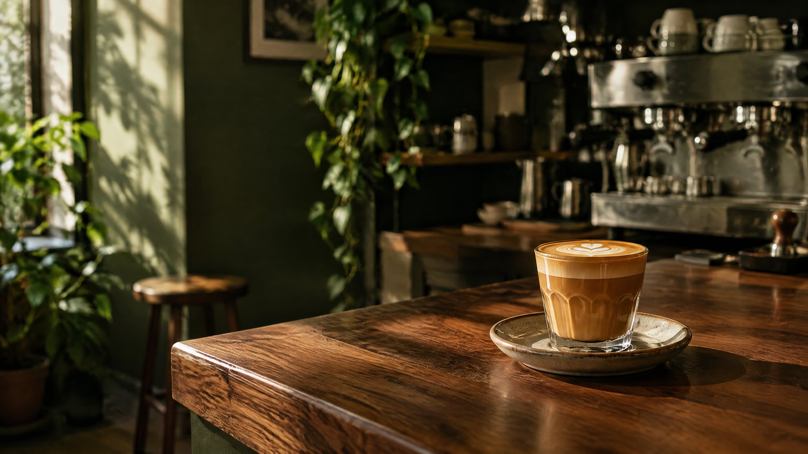

NUESTRO FAVORITO 04 / 10
Bruma de olla.
Canela, piloncillo y un toque de espresso. Una taza que sabe a quedarse otro ratito.

DE LA CASA · $62
Una receta sencilla,
hecha con cuidado.
Preparamos un espresso doble y lo unimos con una infusión suave de canela y piloncillo. El resultado es intenso, dulce y cálido.
- Café mexicano de temporada
- Canela y piloncillo
- Se prepara al momento
Una pausa pequeña, que se disfruta despacio.
Pasa por una taza ↗